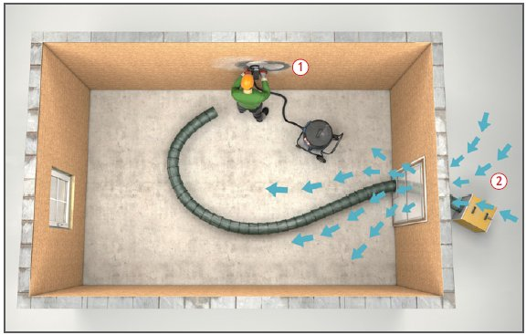
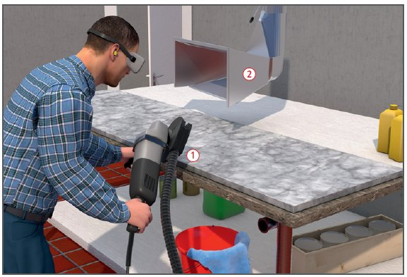

Mineralischer, quarzhaltiger Staub
|
|

Gefährdungen
- Quarzhaltige Stäube können zu Staublungenerkrankungen führen.
Allgemeines
- Bei der Bearbeitung entsteht neben Grobstaub auch Feinstaub.
- Feinstaub ist mit dem Auge nicht mehr sichtbar und kann beim Einatmen bis in die Lunge gelangen. Erkrankungen der Atemorgane wie z. B. Entzündungen oder Bronchitis können die Folge sein.
- Enthält der Feinstaub freie kristalline Kieselsäure, die bei der Bearbeitung quarzhaltiger Gesteine freigesetzt wird, besteht die Gefahr einer Quarzstaublungenerkrankung (Silikose) bzw. einer Lungenkrebserkrankung in Verbindung mit einer Silikose.
Schutzmaßnahmen
- Nur abgesaugte Geräte verwenden
 , Absaugung durch angeschlossenem Entstauber (mind. Staubklasse M).
, Absaugung durch angeschlossenem Entstauber (mind. Staubklasse M).
- Wenn Stauberfassung an der Maschine nicht ausreichend ist, kombinierte Schutzmaßnahmen vorsehen z.B. Absaugung
 am Arbeitsplatz mit Absauganlage oder mobilen Luftreiniger.
am Arbeitsplatz mit Absauganlage oder mobilen Luftreiniger.
Arbeitsplatzgrenzwerte (AGW)
Staubgrenzwerte:
- Alveolengängiger (lungengängiger) Staub (A-Staub) 1,25 mg/m3.
- Einatembarer Staub (E-Staub) 10 mg/m3.
- Tätigkeiten oder Verfahren, bei denen lungengängiger Quarzstaub auftritt, sind als krebserzeugend zu bewerten (Minimierungsgebot). Für Quarzstaub besteht derzeit ein Beurteilungsmaßstab von 0,15 mg/m3 .
Organisatorische Maßnahmen
- Staubbelastende Arbeitsbereiche oder Tätigkeiten ermitteln. Beim Auftreten von Quarzstaub prüfen, ob Materialien mit geringerem Quarzgehalt verwendet werden können.
- Gefährdungsbeurteilung erstellen, Schutzmaßnahmen festlegen, dokumentieren.
- Betriebsanweisung erstellen und Mitarbeiter unterweisen.
- Wirksamkeit der getroffenen Maßnahmen regelmäßig überprüfen.

Technische Maßnahmen
- Staubarme Arbeitsverfahren und direkt abgesaugte Geräte verwenden (www.gisbau.de).
- Staub möglichst an der Entstehungsstelle direkt absaugen (Punktabsaugung) und/oder durch Saugtrichter der Absauganlage oder Luftreiniger erfassen. Saugtrichter oder Ansaugöffnung des Luftreinigers kontinuierlich der Staubquelle nachführen und in Richtung der Ansaugöffnung arbeiten.
- Zum Absaugen von Handmaschinen Entstauber der Staubklasse M oder H verwenden.
- Generell gilt: Staubschutzmaßnahmen nicht auf eine Möglichkeit begrenzen. Häufig führen nur parallele Maßnahmen zum Erfolg.
- Abgesaugte Luft reinigen und ins Freie führen.
- Absauganlagen regelmäßig warten und mindestens einmal jährlich durch zur Prüfung befähigte Person (z. B. Sachkundiger) prüfen lassen.
- Prüfung dokumentieren.
- Arbeitsräume, Maschinen und Geräte regelmäßig von Staubablagerungen reinigen. Bei Reinigungsarbeiten nicht trocken kehren oder mit Druckluft abblasen, sondern saugen. Grobe Stücke mit Rechen einsammeln.
- Für Reinigungsarbeiten nur geeignete und geprüfte Industriesauger der Staubklasse M oder höherwertiger verwenden.
- Für gute Raumbelüftung sorgen, technische Hilfsmittel (z.B. Luftreiniger) hierfür vorhalten.
- Staubgefährdete Arbeitsbereiche von den übrigen Arbeitsplätzen durch bauliche Maßnahmen trennen.
Zusätzliche Hinweise für Nassbearbeitung
- Werden Werkstücke nass bearbeitet, kann der Staubanfall erheblich gemindert werden. Trotzdem ist eine Staubgefährdung nicht gänzlich ausgeschlossen, da insbesondere bei schnelllaufenden Maschinen der Staub mit dem Wasser verwirbelt wird (Aerosolbildung).
- Wasser direkt auf die Schnittstelle leiten.
- Ausbreitung des Sprühnebels verhindern, z. B. durch am Werkstück aufliegende Schutzhauben.
- Umlaufwasser regelmäßig reinigen/wechseln, bei Maschinen ohne Aufbereitung mindestens täglich.
- Beim Schleifen, Polieren nur quarzfreie Mittel verwenden.
Arbeitsmedizinische Vorsorge
- Arbeitsmedizinische Vorsorge nach Ergebnis der Gefährdungsbeurteilung veranlassen (Pflichtvorsorge) oder anbieten (Angebotsvorsorge). Hierzu Beratung durch den Betriebsarzt.
07/2021